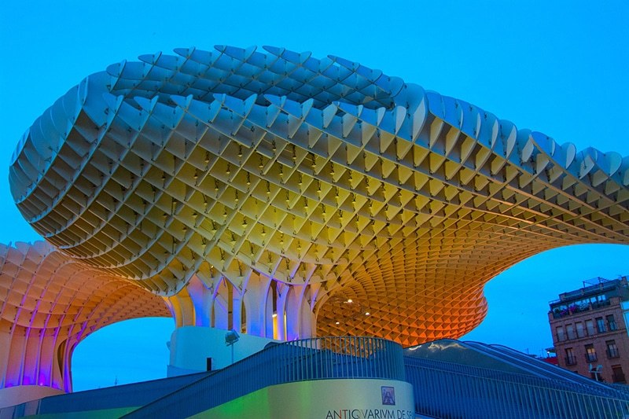
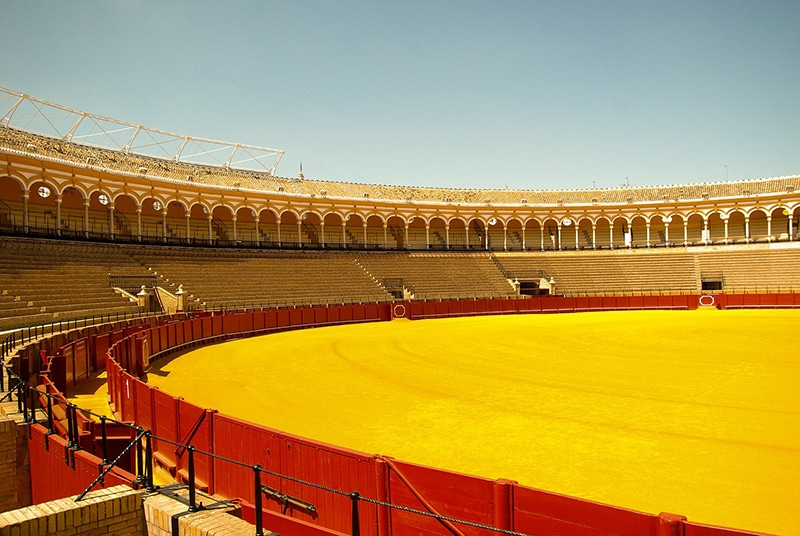

Sevilha o melhor roteiro

Descrição do projeto
Neste projeto eu desvolvi uma página para falar de uma cidade da Espanha onde tem pontos turísticos belíssimos a serem visitados.
Este projeto de Web Design consiste na modernização dos sites, deixando-o mais moderno, responsivo e funcional.
O site poderá ser visto em Breve
Voltar